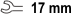
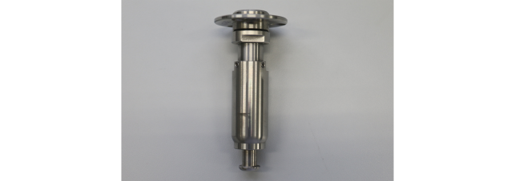

Installing HD pins to Accretech prober's headstage
Follow the procedure to install the hard docking pins to the Accretech prober's headstage.
Before you begin
- Tools:
-
- Allen key

Open-ended wrench- Torx screwdriver
- Parts:
-
- Hard docking pins

- Hard docking pins
Procedure
Results
You have attached the hard docking pins to the Accretech prober's headstage.
Functional changes
- Introduced in SmarTest 8.4.4